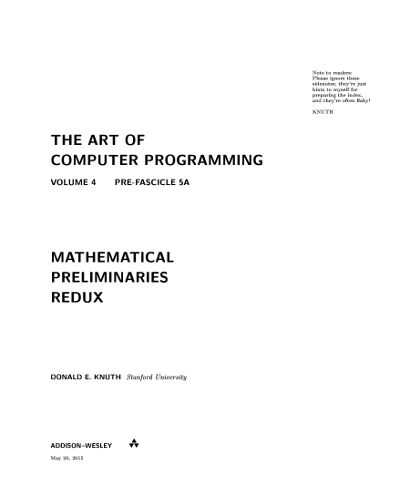

Errata for book: PRINCE, Simon JD. Computer vision: models, learning, and inference. Cambridge University Press, 2012.
Errata for book: PRINCE, Simon JD. Computer vision: models, learning, and inference. Cambridge University Press, 2012.Errata for book: PRINCE, Simon JD. Computer vision: models, learning, and inference. Cambridge University Press, 2012.
 Errata for book: KLETTE, Reinhard. Concise computer vision. Springer, London, 2014.
Errata for book: KLETTE, Reinhard. Concise computer vision. Springer, London, 2014.
 Errata for book: STROUSTRUP, Bjarne. Programming: Principles and Practice Using C++. Addison-Wesley Professional, 2008.
Errata for book: STROUSTRUP, Bjarne. Programming: Principles and Practice Using C++. Addison-Wesley Professional, 2008.
I received 0x$1.00 from Donald Knuth for a found error in the book: KNUTH, Donald Ervin, The Art of Computer Programming, Volume 4B, Pre-fascicle 5A: Mathematical Preliminaries Redux. Zeroth printing, revision 7, 31 August 2013.
 Errata for the book: HUGHES, John F., et al. Computer graphics: principles and practice (3rd ed.). Pearson Education, 2013.
Errata for the book: HUGHES, John F., et al. Computer graphics: principles and practice (3rd ed.). Pearson Education, 2013.